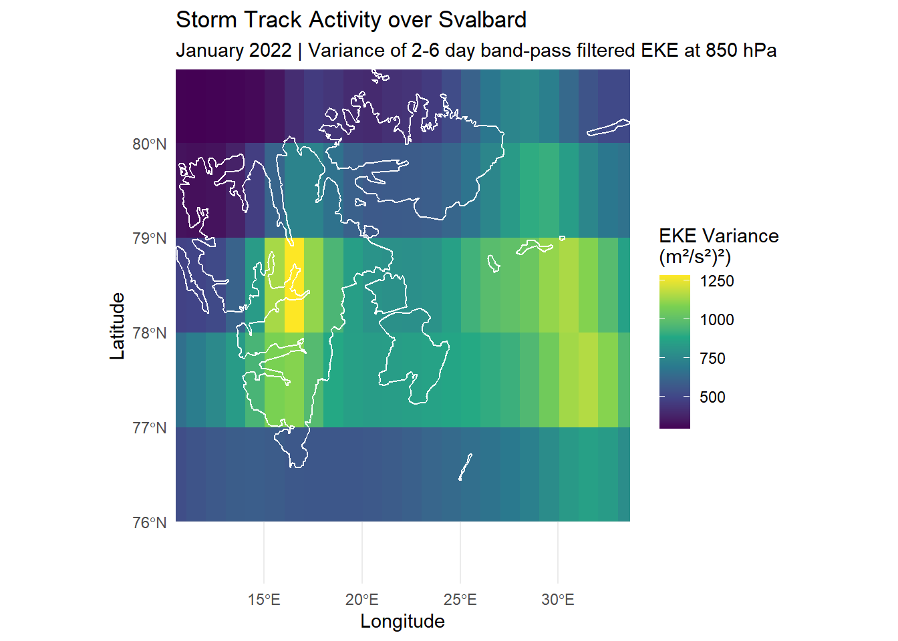
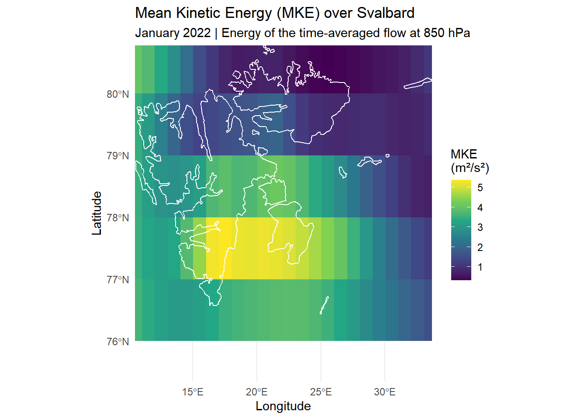
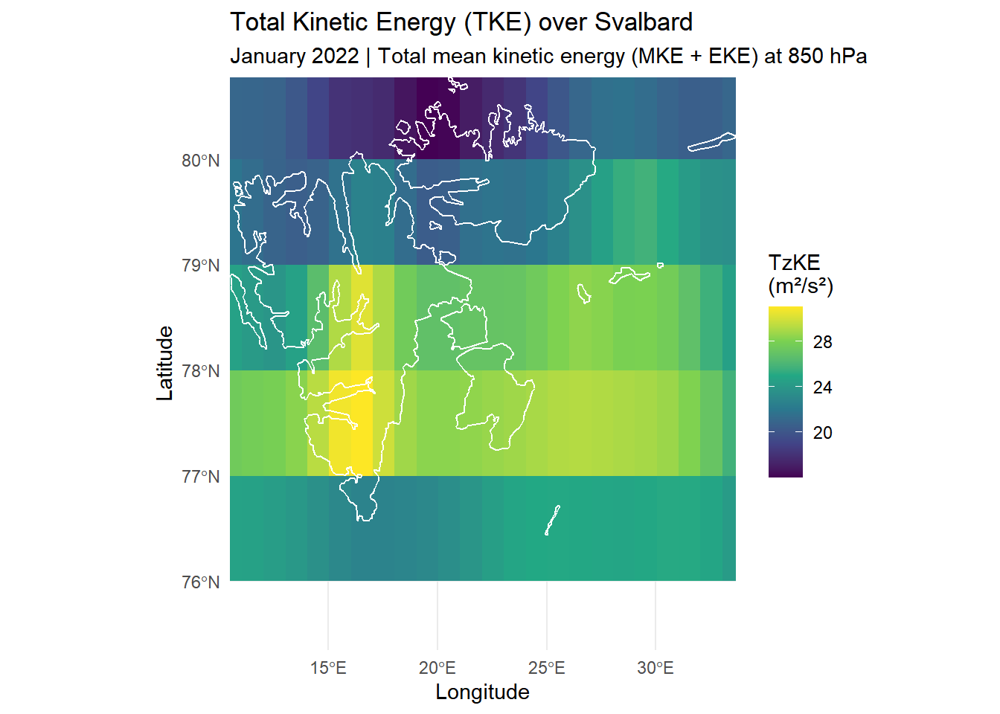

# --- ONE-TIME INSTALLATION ---
# -- R Packages --
# Install all required R packages from CRAN
install.packages(c(
"reticulate", "tidyverse", "terra", "sf", "rnaturalearth",
"devtools", "future", "furrr", "glue", "progressr"
))
# Install the high-resolution map data package from GitHub
# devtools::install_github("ropensci/rnaturalearthhires")
# -- Python Environment and Packages --
# Create the virtual environment if it doesn't already exist
if (!reticulate::virtualenv_exists(envname = "arctic-env")) {
reticulate::virtualenv_create(envname = "arctic-env")
}
# Install all required Python packages into the new environment
reticulate::py_install(
packages = c(
"numpy", "xarray", "netcdf4", "h5netcdf",
"cdsapi", "scipy", "tqdm", "dask",
),
envname = "arctic-env"
)Task 1: Arctic Storminess Climatology
Setup
A self-contained and reproducible computational environment was established as the foundation for the analysis.
- Project Setup: The workflow was situated within an RStudio Project to ensure all file paths were relative and the project was portable. The R
reticulatepackage was used to create and manage a dedicated Python virtual environment ("arctic-env"), ensuring all Python package dependencies are isolated and reproducible.
# Load R Libraries
library(reticulate)
library(tidyverse)
library(terra)
library(sf)
library(rnaturalearth)
library(glue)
library(future)
library(furrr)
library(progressr)
# Configure Python Environment
use_virtualenv("arctic-env", required = TRUE)
# Define the absolute path to the data storage folder
DATA_DIRECTORY <- "E:/ERA5_data"
# Setting for more parallel downloads
#plan(multisession, workers = 20)EKE, TKE and MKE 850hPa January 2022 test
Data Acquisition: The source data was programmatically downloaded from the Copernicus Climate Data Store (CDS) using the Python cdsapi library.
The specific dataset requested was
reanalysis-era5-pressure-levels.The variables
u_component_of_windandv_component_of_windwere downloaded at the 850 hPa pressure level in NetCDF format.The downloaded data was loaded into a Python session as an
xarray.Datasetobject, which is ideal for handling labeled, multi-dimensional climate data.
import cdsapi
import os
import xarray as xr
from scipy import signal
import numpy as np
# Define the final path where we want the file to be
final_path = os.path.join('data', 'era5_850hpa_2022_01_svalbard.nc')
# First, check if the file already exists at the final destination
if not os.path.exists(final_path):
print(f"File not found at {final_path}. Starting download from CDS...")
c = cdsapi.Client()
dataset = "reanalysis-era5-pressure-levels"
request = {
"product_type": "reanalysis",
"variable": [
"u_component_of_wind", "v_component_of_wind"
],
"year": "2022",
"month": "01",
"day": [
"01", "02", "03", "04", "05", "06", "07", "08", "09", "10",
"11", "12", "13", "14", "15", "16", "17", "18", "19", "20",
"21", "22", "23", "24", "25", "26", "27", "28", "29", "30", "31"
],
"time": [
"00:00", "01:00", "02:00", "03:00", "04:00", "05:00", "06:00",
"07:00", "08:00", "09:00", "10:00", "11:00", "12:00", "13:00",
"14:00", "15:00", "16:00", "17:00", "18:00", "19:00", "20:00",
"21:00", "22:00", "23:00"
],
"pressure_level": "850",
"format": "netcdf",
"area": [81, 10, 76, 35]
}
# Retrieve the data AND download it to the final path in one step by adding .download(target=final_path)
c.retrieve(dataset, request).download(target=final_path)
print(f"Data successfully downloaded to {final_path}")
else:
print(f"File already exists at {final_path}. Skipping download.")File already exists at data\era5_850hpa_2022_01_svalbard.nc. Skipping download.Step 1: Reynolds decomposition via Band-Pass filtering
To isolate the transient eddy components (u′ and v′), a digital band-pass filter was applied.
Function Definition: A reusable Python function,
robust_bandpass_filter, was created to encapsulate the filtering logic.Filter Design: A 5th-order Butterworth filter was designed using the
scipy.signal.butterfunction. The filter was configured with a passband corresponding to periods of 2 to 6 days, consistent with the timescale of synoptic-scale storms. The sampling frequency (fs) was set to 24 to reflect the hourly resolution of the input data.Filter Application: To ensure numerical stability, the time series at each grid cell was first detrended using
scipy.signal.detrend. The Butterworth filter was then applied usingscipy.signal.filtfilt, which performs a zero-phase filtering operation to prevent any temporal shift in the output data. This entire process was applied to each grid cell’s time series via a Python loop for maximum stability. The output of this step consists of two newxarray.DataArrayvariables,u_eddyandv_eddy.
# --- PART 1: Define the New, Robust Filter Function ---
def bandpass_filter(ds, u_var, v_var, time_dim, fs, lowcut_days, highcut_days, order=5):
"""
Applies a robust, detrending band-pass filter to u and v components of an xarray Dataset.
Uses a simple loop for stability and returns the Dataset with eddy components.
"""
print("Designing the filter...")
# Design the filter once
lowcut_freq = 1 / lowcut_days
highcut_freq = 1 / highcut_days
b, a = signal.butter(order, [lowcut_freq, highcut_freq], btype='band', fs=fs)
# Get data as numpy arrays
u_data = ds[u_var].values.astype('float64')
v_data = ds[v_var].values.astype('float64')
# Create empty arrays for results
u_eddy_data = np.empty_like(u_data)
v_eddy_data = np.empty_like(v_data)
print("Applying filter cell by cell. This may take a moment...")
# Loop through each spatial grid cell
for lat_idx in range(u_data.shape[1]):
for lon_idx in range(u_data.shape[2]):
# Detrend and filter the time series for this cell
u_filtered = signal.filtfilt(b, a, signal.detrend(u_data[:, lat_idx, lon_idx]))
v_filtered = signal.filtfilt(b, a, signal.detrend(v_data[:, lat_idx, lon_idx]))
# Store the result
u_eddy_data[:, lat_idx, lon_idx] = u_filtered
v_eddy_data[:, lat_idx, lon_idx] = v_filtered
print("Filtering complete.")
# Add the results back to the original dataset
ds['u_eddy'] = ((time_dim, 'latitude', 'longitude'), u_eddy_data)
ds['v_eddy'] = ((time_dim, 'latitude', 'longitude'), v_eddy_data)
return ds# --- PART 2: Load Data and Apply the Function ---
# Load the dataset
ds_real = xr.open_dataset('data/era5_850hpa_2022_01_svalbard.nc').squeeze()
# Define parameters
fs_samples_per_day = 24
lowcut_period_days = 6.0
highcut_period_days = 2.0
# Call the self-contained function
ds_real_filtered = bandpass_filter(
ds=ds_real,
u_var='u',
v_var='v',
time_dim='valid_time',
fs=fs_samples_per_day,
lowcut_days=lowcut_period_days,
highcut_days=highcut_period_days
)Designing the filter...
Applying filter cell by cell. This may take a moment...
Filtering complete.# --- PART 3: Sanity Check ---
print("\nSanity Check of filtered 'u_eddy' values:")
Sanity Check of filtered 'u_eddy' values:print(f" Min: {ds_real_filtered['u_eddy'].min().values:.2f}") Min: -16.92print(f" Max: {ds_real_filtered['u_eddy'].max().values:.2f}") Max: 11.95print(f" Mean: {ds_real_filtered['u_eddy'].mean().values:.2f}") Mean: 0.02## 1. The bandpass_filter Function
First, we defined a Python function.
def bandpass_filter(data_array, fs, lowcut_days, highcut_days, order=5): # ... code inside ... return filtered_data Why a function? We need to perform the exact same filtering operation on both the u and v wind components. Encapsulating the logic in a function makes our code reusable, readable, and less prone to errors from copy-pasting.
## 2. The Function’s Inputs (Parameters)
Let’s look at the function’s “control knobs”:
data_array: This is the input data we want to filter (e.g., thexarrayDataArray containing ouruwind component).fs: This stands for sampling frequency. Think of it as frames per second in a video. It tells the filter how many data points we have per time unit. Since our filter is defined in days (a 2-6 day band) and our data is hourly, we have 24 samples per day. So,fs = 24.lowcut_daysandhighcut_days: These are the edges of our “band,” directly from your proposal. We set them to6.0and2.0. This tells the filter we want to keep the signals with a period between 2 and 6 days.order=5: This controls the “steepness” of the filter. A higher order creates a sharper cutoff between the signals we keep and those we reject. An order of 5 is a robust, standard choice that provides a clean separation.
## 3. Inside the Function: The “How”
This is where the scientific computation happens.
A. Designing the Filter
from scipy import signal # ... b, a = signal.butter(order, [low, high], btype='band') Digital filters are defined by a set of mathematical coefficients. This line uses the scipy.signal.butter function to design a Butterworth filter, which is a standard type known for being very stable and not distorting the signal in the “passband” (the 2-6 day range we want to keep). The function takes our parameters and calculates the necessary coefficients, which it returns as b and a.
B. Applying the Filter
lambda x: signal.filtfilt(b, a, signal.detrend(x))This is the core operation. The signal.filtfilt function takes the filter coefficients (b, a) and applies them to the data (x). The reason we use filtfilt (“filter-filter”) is crucial:
It filters the data once in the forward direction.
Then, it filters the resulting signal again in the backward direction.
This two-way pass perfectly corrects for any time lag (phase shift) that a normal filter would introduce. This ensures that the peaks and troughs in our filtered storm signal are perfectly aligned in time with the original data. The data is also detrended with signal.detrend() prior to filtering to remove any linear trends that could cause filter instability.
C. Applying Across the Entire grid
filtered_data = xr.apply_ufunc(...) This is the most powerful part of the code. The filtfilt function is designed to work on a simple, 1D time series. But our data is a 3D grid (time, latitude, longitude).
xr.apply_ufunc is xarray’s magic wand for this problem. It intelligently applies the 1D filtfilt function to every single time series at each individual latitude/longitude grid point. It handles all the looping for us in a highly optimized way. The input_core_dims=[['time']] argument is our instruction to xarray, telling it that filtfilt operates along the time dimension.
## 4. Putting It All Together
Finally, we call our function:
u_eddy = bandpass_filter(ds_real['u'], fs_samples_per_day, ...) v_eddy = bandpass_filter(ds_real['v'], fs_samples_per_day, ...) This executes the whole process. It feeds the raw u and v wind data into our function. The function then designs the filter and applies it across the entire grid, returning the perfectly isolated eddy components (u’ and v’). These are now ready for the final EKE calculation.
Step 2: Calculate EKE, MKE and TKE
The three key kinetic energy indices were calculated in Python.
Eddy Kinetic Energy (EKE): The instantaneous EKE was calculated at each grid cell for every time step from the eddy components. The result was stored as a new 3D
DataArraynamedeke.Mean Kinetic Energy (MKE): The time-averaged wind components, u and v, were calculated by applying the
.mean(dim='valid_time')method to the originaluandvDataArrays. MKE was then calculated and resulted in a 2D DataArray.Total Kinetic Energy (TKE): The time-averaged EKE, was first calculated. The mean TKE was then computed as the sum of the two time-averaged components:.
# 'ds_real' is the xarray Dataset from the previous chunk, containing u_eddy and v_eddy
# 1. Calculate EKE using the eddy components
# EKE = 0.5 * (u'^2 + v'^2)
eke = 0.5 * (np.square(ds_real['u_eddy']) + np.square(ds_real['v_eddy']))
# 2. Add EKE as a new data variable to the dataset
ds_real['eke'] = eke
# 3. Print the dataset to confirm the new 'eke' variable is present
print(ds_real)<xarray.Dataset> Size: 51MB
Dimensions: (valid_time: 744, latitude: 21, longitude: 101)
Coordinates:
number int64 8B ...
* valid_time (valid_time) datetime64[ns] 6kB 2022-01-01 ... 2022-01-31...
pressure_level float64 8B 850.0
* latitude (latitude) float64 168B 81.0 80.75 80.5 ... 76.5 76.25 76.0
* longitude (longitude) float64 808B 10.0 10.25 10.5 ... 34.5 34.75 35.0
expver (valid_time) <U4 12kB ...
Data variables:
u (valid_time, latitude, longitude) float32 6MB -9.694 ... ...
v (valid_time, latitude, longitude) float32 6MB -0.1228 ......
u_eddy (valid_time, latitude, longitude) float64 13MB 1.742 ... ...
v_eddy (valid_time, latitude, longitude) float64 13MB -0.1631 .....
eke (valid_time, latitude, longitude) float64 13MB 1.531 ... ...
Attributes:
GRIB_centre: ecmf
GRIB_centreDescription: European Centre for Medium-Range Weather Forecasts
GRIB_subCentre: 0
Conventions: CF-1.7
institution: European Centre for Medium-Range Weather Forecasts
history: 2025-10-01T15:15 GRIB to CDM+CF via cfgrib-0.9.1...# 4. Calculate the time-averaged wind components (u_bar, v_bar)
# We take the mean of the original wind fields across the 'valid_time' dimension.
u_bar = ds_real['u'].mean(dim='valid_time')
v_bar = ds_real['v'].mean(dim='valid_time')
# 5. Calculate Mean Kinetic Energy (MKE) using the formula
mke = 0.5 * (np.square(u_bar) + np.square(v_bar))
# 6. Calculate the time-average of our previously calculated EKE
eke_mean = ds_real['eke'].mean(dim='valid_time')
# 7. Calculate the time-average of Total Kinetic Energy (TKE)
tke = mke + eke_mean
# 8. Combine these into a final summary dataset for easy access
ds_summary = xr.Dataset({
'mke': mke,
'eke_mean': eke_mean,
'tke': tke
})
# Rename the 'eke_mean' to just 'eke' for simplicity, as it's the mean EKE
ds_summary = ds_summary.rename({'eke_mean': 'eke'})
print("Summary of Monthly-Mean Kinetic Energy Components (m²/s²):")Summary of Monthly-Mean Kinetic Energy Components (m²/s²):print(ds_summary)<xarray.Dataset> Size: 43kB
Dimensions: (latitude: 21, longitude: 101)
Coordinates:
number int64 8B 0
pressure_level float64 8B 850.0
* latitude (latitude) float64 168B 81.0 80.75 80.5 ... 76.5 76.25 76.0
* longitude (longitude) float64 808B 10.0 10.25 10.5 ... 34.5 34.75 35.0
Data variables:
mke (latitude, longitude) float32 8kB 5.1 4.941 ... 1.417 1.39
eke (latitude, longitude) float64 17kB 16.42 16.47 ... 19.48
tke (latitude, longitude) float64 17kB 21.52 21.41 ... 20.87Step 3: Calculate EKE variance
The primary storminess metric was calculated as the final analytical step in Python.
- The variance of EKE was computed by applying the
.var(dim='valid_time')method to the 3DekeDataArray. This operation collapses the time dimension, resulting in a final 2Dxarray.DataArray(eke_variance) which serves as the “fundamental metric for overall storm track activity.”
# 'ds_real' now contains our 'eke' variable
# Calculate the variance across the time dimension ('valid_time')
# This leaves us with a 2D grid of (latitude, longitude)
eke_variance = ds_real['eke'].var(dim='valid_time')
# Print the final 2D DataArray
print("Final 2D EKE Variance grid:")Final 2D EKE Variance grid:print(eke_variance)<xarray.DataArray 'eke' (latitude: 21, longitude: 101)> Size: 17kB
array([[289.96876873, 293.04693922, 295.71314684, ..., 358.84092046,
342.36477921, 325.39313085],
[315.00407761, 315.0657759 , 314.36522357, ..., 351.64111161,
332.04903741, 313.89207933],
[321.93092482, 321.13066035, 318.83723812, ..., 340.30042977,
319.31674403, 300.43730022],
...,
[684.95545032, 671.97864538, 651.17401606, ..., 589.36865325,
565.86029154, 542.17191288],
[644.62265168, 630.05633442, 614.56218247, ..., 578.45030447,
554.50269551, 534.34552214],
[636.96972035, 625.72814428, 611.50514077, ..., 555.56279592,
535.73488895, 519.18232471]], shape=(21, 101))
Coordinates:
number int64 8B ...
pressure_level float64 8B 850.0
* latitude (latitude) float64 168B 81.0 80.75 80.5 ... 76.5 76.25 76.0
* longitude (longitude) float64 808B 10.0 10.25 10.5 ... 34.5 34.75 35.0Step 3: Conversion and remapping
The final 2D data products were transferred from Python to R for remapping and visualization.
Data Transfer: The
eke_variance,mke, andtkexarrayobjects were accessed in R usingreticulate’spy$accessor.Remapping to Standard Grid: As required by your proposal for robust trend analysis, each data grid was remapped to a common 1.0° x 1.0° grid. This was achieved by:
First converting the Python objects into high-resolution
terra::SpatRasterobjects in R.Creating a blank 1.0° target grid (
template_raster).Using the
terra::resample()function withbilinearinterpolation to project the high-resolution data onto the target grid.
# --- PART 1: Define the Integrated Function ---
# This single function handles both conversion from Python and remapping.
process_and_remap_py <- function(py_xarray_object, layer_name, template_raster) {
# Step A: Convert the Python object to a high-resolution R SpatRaster
high_res_raster <- terra::rast(
t(py_xarray_object$values),
ext = terra::ext(
min(py_xarray_object$longitude$values),
max(py_xarray_object$longitude$values),
min(py_xarray_object$latitude$values),
max(py_xarray_object$latitude$values)
),
crs = "EPSG:4326"
)
# Step B: Remap the high-resolution raster to the template grid
resampled_raster <- terra::resample(high_res_raster, template_raster, method = "bilinear")
# Set the final layer name
names(resampled_raster) <- layer_name
# Return the final, remapped raster
return(resampled_raster)
}
# --- PART 2: Prepare the Target Grid (Blueprint) ---
# We create the 1.0-degree blueprint once. All data will be remapped to this grid.
template_raster <- terra::rast(
resolution = 1.0,
extent = terra::ext(
min(py$eke_variance$longitude$values),
max(py$eke_variance$longitude$values),
min(py$eke_variance$latitude$values),
max(py$eke_variance$latitude$values)
),
crs = "EPSG:4326"
)
# --- PART 3: Apply the New Function to All Variables ---
# Now we just call our powerful new function for each variable.
eke_variance_resampled <- process_and_remap_py(py$eke_variance, "eke_variance", template_raster)
mke_resampled <- process_and_remap_py(py$ds_summary$mke, "mke", template_raster)
tke_resampled <- process_and_remap_py(py$ds_summary$tke, "tke", template_raster)
# Let's print one of the final products to verify.
# The resolution should now be 1 x 1.
print("--- Final Resampled EKE Raster (1.0-degree resolution) ---")[1] "--- Final Resampled EKE Raster (1.0-degree resolution) ---"print(eke_variance_resampled)class : SpatRaster
size : 5, 25, 1 (nrow, ncol, nlyr)
resolution : 1, 1 (x, y)
extent : 10, 35, 76, 81 (xmin, xmax, ymin, ymax)
coord. ref. : lon/lat WGS 84 (EPSG:4326)
source(s) : memory
name : eke_variance
min value : 293.5577
max value : 1284.6801 Step 4: Visualize the final maps
The final, remapped SpatRaster objects were converted to data.frame objects.
Publication-quality maps were generated using the ggplot2 package, with geom_raster to display the energy data.
A geographical outline of Svalbard was acquired using the rnaturalearth package and overlaid using geom_sf to provide essential context.
# Devtools to install the high-resolution map data package from its source
# devtools::install_github("ropensci/rnaturalearthhires")
# Acquire all Norwegian state-level polygons using the function: ne_states().
norway_territories <- ne_states(country = "Norway", returnclass = "sf")
# Now, filter that collection to get only the feature named "Svalbard"
svalbard_sf <- norway_territories |>
filter(name == "Svalbard")
# Get the bounding box of the Svalbard polygon
svalbard_bbox <- st_bbox(svalbard_sf)
# Convert the raster to a data frame for plotting with ggplot2
eke_variance_resampled_df <- as.data.frame(eke_variance_resampled, xy = TRUE)
# Create the final map with the new contour layer
ggplot() +
# First, draw the EKE raster data
geom_raster(data = eke_variance_resampled_df, aes(x = x, y = y, fill = eke_variance)) +
# Next, draw the Svalbard outline on top
geom_sf(data = svalbard_sf, fill = NA, color = "white", linewidth = 0.5) +
# Apply color scale and labels
scale_fill_viridis_c(name = "EKE Variance\n(m²/s²)²)") +
labs(
title = "Storm Track Activity over Svalbard",
subtitle = "January 2022 | Variance of 2-6 day band-pass filtered EKE at 850 hPa",
x = "Longitude",
y = "Latitude"
) +
# IMPORTANT: Set the plot's coordinate system and limits
# We add a small buffer (e.g., +/- 1 degree) for a nice margin
coord_sf(
xlim = c(svalbard_bbox["xmin"], svalbard_bbox["xmax"]),
ylim = c(svalbard_bbox["ymin"] + 1, svalbard_bbox["ymax"]),
expand = FALSE
) +
theme_minimal()
mke_resampled_df <- as.data.frame(mke_resampled, xy = TRUE)
ggplot() +
geom_raster(data = mke_resampled_df, aes(x = x, y = y, fill = mke)) +
geom_sf(data = svalbard_sf, fill = NA, color = "white", linewidth = 0.5) +
scale_fill_viridis_c(name = "MKE\n(m²/s²)") +
labs(
title = "Mean Kinetic Energy (MKE) over Svalbard",
subtitle = "January 2022 | Energy of the time-averaged flow at 850 hPa",
x = "Longitude",
y = "Latitude"
) +
coord_sf(
xlim = c(svalbard_bbox["xmin"], svalbard_bbox["xmax"]),
ylim = c(svalbard_bbox["ymin"] + 1, svalbard_bbox["ymax"]),
expand = FALSE
) +
theme_minimal()
# Convert the raster to a data frame for plotting with ggplot2
tke_resampled_df <- as.data.frame(tke_resampled, xy = TRUE)
# Create the final map with the new contour layer
ggplot() +
# First, draw the EKE raster data
geom_raster(data = tke_resampled_df, aes(x = x, y = y, fill = tke)) +
# Next, draw the Svalbard outline on top
geom_sf(data = svalbard_sf, fill = NA, color = "white", linewidth = 0.5) +
# Apply color scale and labels
scale_fill_viridis_c(name = "TzKE\n(m²/s²)") +
labs(
title = "Total Kinetic Energy (TKE) over Svalbard",
subtitle = "January 2022 | Total mean kinetic energy (MKE + EKE) at 850 hPa",
x = "Longitude",
y = "Latitude"
) +
# IMPORTANT: Set the plot's coordinate system and limits
# We add a small buffer (e.g., +/- 1 degree) for a nice margin
coord_sf(
xlim = c(svalbard_bbox["xmin"], svalbard_bbox["xmax"]),
ylim = c(svalbard_bbox["ymin"] + 1, svalbard_bbox["ymax"]),
expand = FALSE
) +
theme_minimal()
1979-present EKE, TKE and MKE 850hPa
import cdsapi
import os
import xarray as xr
from scipy import signal
import numpy as np
# --- 1. CONFIGURATION ---
# Access the DATA_DIRECTORY variable from your R configuration chunk
data_dir = r.DATA_DIRECTORY
# Create the directory on your hard disk if it doesn't exist
if not os.path.exists(data_dir):
os.makedirs(data_dir)
print(f"Created directory: {data_dir}")
# Let's start with just two years to test the monthly download loop.
# For the final run, you will change this to range(1958, 2025).
YEARS_TO_DOWNLOAD = range(1958, 2024)
AREA_PAN_ARCTIC = [90, -180, 55, 180] # North, West, South, East
# --- 2. NESTED LOOP AND DOWNLOAD ---
c = cdsapi.Client()
print("Starting batch download process (one file per month)...")Starting batch download process (one file per month)...# Outer loop for each year
for year in YEARS_TO_DOWNLOAD:
# Inner loop for each month (from 1 to 12)
for month in range(1, 13):
# Format the month with a leading zero (e.g., 1 -> "01", 10 -> "10")
month_str = f"{month:02d}"
# Create a specific filename for each YEAR and MONTH
final_path = os.path.join(data_dir, f"era5_850hpa_panarctic_{year}-{month_str}.nc")
# Check if this specific monthly file already exists
if not os.path.exists(final_path):
print(f"--- Downloading data for: {year}-{month_str} ---")
request = {
"product_type": "reanalysis",
"variable": ["u_component_of_wind", "v_component_of_wind"],
"year": str(year),
"month": month_str, # Dynamically set the month
"day": [
"01", "02", "03", "04", "05", "06", "07", "08", "09", "10",
"11", "12", "13", "14", "15", "16", "17", "18", "19", "20",
"21", "22", "23", "24", "25", "26", "27", "28", "29", "30",
"31"
],
"time": [
"00:00", "01:00", "02:00", "03:00", "04:00", "05:00", "06:00",
"07:00", "08:00", "09:00", "10:00", "11:00", "12:00", "13:00",
"14:00", "15:00", "16:00", "17:00", "18:00", "19:00", "20:00",
"21:00", "22:00", "23:00"
],
"pressure_level": "850",
"format": "netcdf",
"area": AREA_PAN_ARCTIC
}
# Use a try-except block to handle potential API errors for a single month
try:
c.retrieve('reanalysis-era5-pressure-levels', request).download(target=final_path)
print(f"Successfully downloaded to {final_path}")
except Exception as e:
print(f"!!! FAILED to download data for {year}-{month_str}. Error: {e}")
else:
print(f"--- File for {year}-{month_str} already exists. Skipping. ---")--- File for 1958-01 already exists. Skipping. ---
--- File for 1958-02 already exists. Skipping. ---
--- File for 1958-03 already exists. Skipping. ---
--- File for 1958-04 already exists. Skipping. ---
--- File for 1958-05 already exists. Skipping. ---
--- File for 1958-06 already exists. Skipping. ---
--- File for 1958-07 already exists. Skipping. ---
--- File for 1958-08 already exists. Skipping. ---
--- File for 1958-09 already exists. Skipping. ---
--- File for 1958-10 already exists. Skipping. ---
--- File for 1958-11 already exists. Skipping. ---
--- File for 1958-12 already exists. Skipping. ---
--- File for 1959-01 already exists. Skipping. ---
--- File for 1959-02 already exists. Skipping. ---
--- File for 1959-03 already exists. Skipping. ---
--- File for 1959-04 already exists. Skipping. ---
--- File for 1959-05 already exists. Skipping. ---
--- File for 1959-06 already exists. Skipping. ---
--- File for 1959-07 already exists. Skipping. ---
--- File for 1959-08 already exists. Skipping. ---
--- File for 1959-09 already exists. Skipping. ---
--- File for 1959-10 already exists. Skipping. ---
--- File for 1959-11 already exists. Skipping. ---
--- File for 1959-12 already exists. Skipping. ---
--- File for 1960-01 already exists. Skipping. ---
--- File for 1960-02 already exists. Skipping. ---
--- File for 1960-03 already exists. Skipping. ---
--- File for 1960-04 already exists. Skipping. ---
--- File for 1960-05 already exists. Skipping. ---
--- File for 1960-06 already exists. Skipping. ---
--- File for 1960-07 already exists. Skipping. ---
--- File for 1960-08 already exists. Skipping. ---
--- File for 1960-09 already exists. Skipping. ---
--- File for 1960-10 already exists. Skipping. ---
--- File for 1960-11 already exists. Skipping. ---
--- File for 1960-12 already exists. Skipping. ---
--- File for 1961-01 already exists. Skipping. ---
--- File for 1961-02 already exists. Skipping. ---
--- File for 1961-03 already exists. Skipping. ---
--- File for 1961-04 already exists. Skipping. ---
--- File for 1961-05 already exists. Skipping. ---
--- File for 1961-06 already exists. Skipping. ---
--- File for 1961-07 already exists. Skipping. ---
--- File for 1961-08 already exists. Skipping. ---
--- File for 1961-09 already exists. Skipping. ---
--- File for 1961-10 already exists. Skipping. ---
--- File for 1961-11 already exists. Skipping. ---
--- File for 1961-12 already exists. Skipping. ---
--- File for 1962-01 already exists. Skipping. ---
--- File for 1962-02 already exists. Skipping. ---
--- File for 1962-03 already exists. Skipping. ---
--- File for 1962-04 already exists. Skipping. ---
--- File for 1962-05 already exists. Skipping. ---
--- File for 1962-06 already exists. Skipping. ---
--- File for 1962-07 already exists. Skipping. ---
--- File for 1962-08 already exists. Skipping. ---
--- File for 1962-09 already exists. Skipping. ---
--- File for 1962-10 already exists. Skipping. ---
--- File for 1962-11 already exists. Skipping. ---
--- File for 1962-12 already exists. Skipping. ---
--- File for 1963-01 already exists. Skipping. ---
--- File for 1963-02 already exists. Skipping. ---
--- File for 1963-03 already exists. Skipping. ---
--- File for 1963-04 already exists. Skipping. ---
--- File for 1963-05 already exists. Skipping. ---
--- File for 1963-06 already exists. Skipping. ---
--- File for 1963-07 already exists. Skipping. ---
--- File for 1963-08 already exists. Skipping. ---
--- File for 1963-09 already exists. Skipping. ---
--- File for 1963-10 already exists. Skipping. ---
--- File for 1963-11 already exists. Skipping. ---
--- File for 1963-12 already exists. Skipping. ---
--- File for 1964-01 already exists. Skipping. ---
--- File for 1964-02 already exists. Skipping. ---
--- File for 1964-03 already exists. Skipping. ---
--- File for 1964-04 already exists. Skipping. ---
--- File for 1964-05 already exists. Skipping. ---
--- File for 1964-06 already exists. Skipping. ---
--- File for 1964-07 already exists. Skipping. ---
--- File for 1964-08 already exists. Skipping. ---
--- File for 1964-09 already exists. Skipping. ---
--- File for 1964-10 already exists. Skipping. ---
--- File for 1964-11 already exists. Skipping. ---
--- File for 1964-12 already exists. Skipping. ---
--- File for 1965-01 already exists. Skipping. ---
--- File for 1965-02 already exists. Skipping. ---
--- File for 1965-03 already exists. Skipping. ---
--- File for 1965-04 already exists. Skipping. ---
--- File for 1965-05 already exists. Skipping. ---
--- File for 1965-06 already exists. Skipping. ---
--- File for 1965-07 already exists. Skipping. ---
--- File for 1965-08 already exists. Skipping. ---
--- File for 1965-09 already exists. Skipping. ---
--- File for 1965-10 already exists. Skipping. ---
--- File for 1965-11 already exists. Skipping. ---
--- File for 1965-12 already exists. Skipping. ---
--- File for 1966-01 already exists. Skipping. ---
--- File for 1966-02 already exists. Skipping. ---
--- File for 1966-03 already exists. Skipping. ---
--- File for 1966-04 already exists. Skipping. ---
--- File for 1966-05 already exists. Skipping. ---
--- File for 1966-06 already exists. Skipping. ---
--- File for 1966-07 already exists. Skipping. ---
--- File for 1966-08 already exists. Skipping. ---
--- File for 1966-09 already exists. Skipping. ---
--- File for 1966-10 already exists. Skipping. ---
--- File for 1966-11 already exists. Skipping. ---
--- File for 1966-12 already exists. Skipping. ---
--- File for 1967-01 already exists. Skipping. ---
--- File for 1967-02 already exists. Skipping. ---
--- File for 1967-03 already exists. Skipping. ---
--- File for 1967-04 already exists. Skipping. ---
--- File for 1967-05 already exists. Skipping. ---
--- File for 1967-06 already exists. Skipping. ---
--- File for 1967-07 already exists. Skipping. ---
--- File for 1967-08 already exists. Skipping. ---
--- File for 1967-09 already exists. Skipping. ---
--- File for 1967-10 already exists. Skipping. ---
--- File for 1967-11 already exists. Skipping. ---
--- File for 1967-12 already exists. Skipping. ---
--- File for 1968-01 already exists. Skipping. ---
--- File for 1968-02 already exists. Skipping. ---
--- File for 1968-03 already exists. Skipping. ---
--- File for 1968-04 already exists. Skipping. ---
--- File for 1968-05 already exists. Skipping. ---
--- File for 1968-06 already exists. Skipping. ---
--- File for 1968-07 already exists. Skipping. ---
--- File for 1968-08 already exists. Skipping. ---
--- File for 1968-09 already exists. Skipping. ---
--- File for 1968-10 already exists. Skipping. ---
--- File for 1968-11 already exists. Skipping. ---
--- File for 1968-12 already exists. Skipping. ---
--- File for 1969-01 already exists. Skipping. ---
--- File for 1969-02 already exists. Skipping. ---
--- File for 1969-03 already exists. Skipping. ---
--- File for 1969-04 already exists. Skipping. ---
--- File for 1969-05 already exists. Skipping. ---
--- File for 1969-06 already exists. Skipping. ---
--- File for 1969-07 already exists. Skipping. ---
--- File for 1969-08 already exists. Skipping. ---
--- File for 1969-09 already exists. Skipping. ---
--- File for 1969-10 already exists. Skipping. ---
--- File for 1969-11 already exists. Skipping. ---
--- File for 1969-12 already exists. Skipping. ---
--- File for 1970-01 already exists. Skipping. ---
--- File for 1970-02 already exists. Skipping. ---
--- File for 1970-03 already exists. Skipping. ---
--- File for 1970-04 already exists. Skipping. ---
--- File for 1970-05 already exists. Skipping. ---
--- File for 1970-06 already exists. Skipping. ---
--- File for 1970-07 already exists. Skipping. ---
--- File for 1970-08 already exists. Skipping. ---
--- File for 1970-09 already exists. Skipping. ---
--- File for 1970-10 already exists. Skipping. ---
--- File for 1970-11 already exists. Skipping. ---
--- File for 1970-12 already exists. Skipping. ---
--- File for 1971-01 already exists. Skipping. ---
--- File for 1971-02 already exists. Skipping. ---
--- File for 1971-03 already exists. Skipping. ---
--- File for 1971-04 already exists. Skipping. ---
--- File for 1971-05 already exists. Skipping. ---
--- File for 1971-06 already exists. Skipping. ---
--- File for 1971-07 already exists. Skipping. ---
--- File for 1971-08 already exists. Skipping. ---
--- File for 1971-09 already exists. Skipping. ---
--- File for 1971-10 already exists. Skipping. ---
--- File for 1971-11 already exists. Skipping. ---
--- File for 1971-12 already exists. Skipping. ---
--- File for 1972-01 already exists. Skipping. ---
--- File for 1972-02 already exists. Skipping. ---
--- File for 1972-03 already exists. Skipping. ---
--- File for 1972-04 already exists. Skipping. ---
--- File for 1972-05 already exists. Skipping. ---
--- File for 1972-06 already exists. Skipping. ---
--- File for 1972-07 already exists. Skipping. ---
--- File for 1972-08 already exists. Skipping. ---
--- File for 1972-09 already exists. Skipping. ---
--- File for 1972-10 already exists. Skipping. ---
--- File for 1972-11 already exists. Skipping. ---
--- File for 1972-12 already exists. Skipping. ---
--- File for 1973-01 already exists. Skipping. ---
--- File for 1973-02 already exists. Skipping. ---
--- File for 1973-03 already exists. Skipping. ---
--- File for 1973-04 already exists. Skipping. ---
--- File for 1973-05 already exists. Skipping. ---
--- File for 1973-06 already exists. Skipping. ---
--- File for 1973-07 already exists. Skipping. ---
--- File for 1973-08 already exists. Skipping. ---
--- File for 1973-09 already exists. Skipping. ---
--- File for 1973-10 already exists. Skipping. ---
--- File for 1973-11 already exists. Skipping. ---
--- File for 1973-12 already exists. Skipping. ---
--- File for 1974-01 already exists. Skipping. ---
--- File for 1974-02 already exists. Skipping. ---
--- File for 1974-03 already exists. Skipping. ---
--- File for 1974-04 already exists. Skipping. ---
--- File for 1974-05 already exists. Skipping. ---
--- File for 1974-06 already exists. Skipping. ---
--- File for 1974-07 already exists. Skipping. ---
--- File for 1974-08 already exists. Skipping. ---
--- File for 1974-09 already exists. Skipping. ---
--- File for 1974-10 already exists. Skipping. ---
--- File for 1974-11 already exists. Skipping. ---
--- File for 1974-12 already exists. Skipping. ---
--- File for 1975-01 already exists. Skipping. ---
--- File for 1975-02 already exists. Skipping. ---
--- File for 1975-03 already exists. Skipping. ---
--- File for 1975-04 already exists. Skipping. ---
--- File for 1975-05 already exists. Skipping. ---
--- File for 1975-06 already exists. Skipping. ---
--- File for 1975-07 already exists. Skipping. ---
--- File for 1975-08 already exists. Skipping. ---
--- File for 1975-09 already exists. Skipping. ---
--- File for 1975-10 already exists. Skipping. ---
--- File for 1975-11 already exists. Skipping. ---
--- File for 1975-12 already exists. Skipping. ---
--- File for 1976-01 already exists. Skipping. ---
--- File for 1976-02 already exists. Skipping. ---
--- File for 1976-03 already exists. Skipping. ---
--- File for 1976-04 already exists. Skipping. ---
--- File for 1976-05 already exists. Skipping. ---
--- File for 1976-06 already exists. Skipping. ---
--- File for 1976-07 already exists. Skipping. ---
--- File for 1976-08 already exists. Skipping. ---
--- File for 1976-09 already exists. Skipping. ---
--- File for 1976-10 already exists. Skipping. ---
--- File for 1976-11 already exists. Skipping. ---
--- File for 1976-12 already exists. Skipping. ---
--- File for 1977-01 already exists. Skipping. ---
--- File for 1977-02 already exists. Skipping. ---
--- File for 1977-03 already exists. Skipping. ---
--- File for 1977-04 already exists. Skipping. ---
--- File for 1977-05 already exists. Skipping. ---
--- File for 1977-06 already exists. Skipping. ---
--- File for 1977-07 already exists. Skipping. ---
--- File for 1977-08 already exists. Skipping. ---
--- File for 1977-09 already exists. Skipping. ---
--- File for 1977-10 already exists. Skipping. ---
--- File for 1977-11 already exists. Skipping. ---
--- File for 1977-12 already exists. Skipping. ---
--- File for 1978-01 already exists. Skipping. ---
--- File for 1978-02 already exists. Skipping. ---
--- File for 1978-03 already exists. Skipping. ---
--- File for 1978-04 already exists. Skipping. ---
--- File for 1978-05 already exists. Skipping. ---
--- File for 1978-06 already exists. Skipping. ---
--- File for 1978-07 already exists. Skipping. ---
--- File for 1978-08 already exists. Skipping. ---
--- File for 1978-09 already exists. Skipping. ---
--- File for 1978-10 already exists. Skipping. ---
--- File for 1978-11 already exists. Skipping. ---
--- File for 1978-12 already exists. Skipping. ---
--- File for 1979-01 already exists. Skipping. ---
--- File for 1979-02 already exists. Skipping. ---
--- File for 1979-03 already exists. Skipping. ---
--- File for 1979-04 already exists. Skipping. ---
--- File for 1979-05 already exists. Skipping. ---
--- File for 1979-06 already exists. Skipping. ---
--- File for 1979-07 already exists. Skipping. ---
--- File for 1979-08 already exists. Skipping. ---
--- File for 1979-09 already exists. Skipping. ---
--- File for 1979-10 already exists. Skipping. ---
--- File for 1979-11 already exists. Skipping. ---
--- File for 1979-12 already exists. Skipping. ---
--- File for 1980-01 already exists. Skipping. ---
--- File for 1980-02 already exists. Skipping. ---
--- File for 1980-03 already exists. Skipping. ---
--- File for 1980-04 already exists. Skipping. ---
--- File for 1980-05 already exists. Skipping. ---
--- File for 1980-06 already exists. Skipping. ---
--- File for 1980-07 already exists. Skipping. ---
--- File for 1980-08 already exists. Skipping. ---
--- File for 1980-09 already exists. Skipping. ---
--- File for 1980-10 already exists. Skipping. ---
--- File for 1980-11 already exists. Skipping. ---
--- File for 1980-12 already exists. Skipping. ---
--- File for 1981-01 already exists. Skipping. ---
--- File for 1981-02 already exists. Skipping. ---
--- File for 1981-03 already exists. Skipping. ---
--- File for 1981-04 already exists. Skipping. ---
--- File for 1981-05 already exists. Skipping. ---
--- File for 1981-06 already exists. Skipping. ---
--- File for 1981-07 already exists. Skipping. ---
--- File for 1981-08 already exists. Skipping. ---
--- File for 1981-09 already exists. Skipping. ---
--- File for 1981-10 already exists. Skipping. ---
--- File for 1981-11 already exists. Skipping. ---
--- File for 1981-12 already exists. Skipping. ---
--- File for 1982-01 already exists. Skipping. ---
--- File for 1982-02 already exists. Skipping. ---
--- File for 1982-03 already exists. Skipping. ---
--- File for 1982-04 already exists. Skipping. ---
--- File for 1982-05 already exists. Skipping. ---
--- File for 1982-06 already exists. Skipping. ---
--- File for 1982-07 already exists. Skipping. ---
--- File for 1982-08 already exists. Skipping. ---
--- File for 1982-09 already exists. Skipping. ---
--- File for 1982-10 already exists. Skipping. ---
--- File for 1982-11 already exists. Skipping. ---
--- File for 1982-12 already exists. Skipping. ---
--- File for 1983-01 already exists. Skipping. ---
--- File for 1983-02 already exists. Skipping. ---
--- File for 1983-03 already exists. Skipping. ---
--- File for 1983-04 already exists. Skipping. ---
--- File for 1983-05 already exists. Skipping. ---
--- File for 1983-06 already exists. Skipping. ---
--- File for 1983-07 already exists. Skipping. ---
--- File for 1983-08 already exists. Skipping. ---
--- File for 1983-09 already exists. Skipping. ---
--- File for 1983-10 already exists. Skipping. ---
--- File for 1983-11 already exists. Skipping. ---
--- File for 1983-12 already exists. Skipping. ---
--- File for 1984-01 already exists. Skipping. ---
--- File for 1984-02 already exists. Skipping. ---
--- File for 1984-03 already exists. Skipping. ---
--- File for 1984-04 already exists. Skipping. ---
--- File for 1984-05 already exists. Skipping. ---
--- File for 1984-06 already exists. Skipping. ---
--- File for 1984-07 already exists. Skipping. ---
--- File for 1984-08 already exists. Skipping. ---
--- File for 1984-09 already exists. Skipping. ---
--- File for 1984-10 already exists. Skipping. ---
--- File for 1984-11 already exists. Skipping. ---
--- File for 1984-12 already exists. Skipping. ---
--- File for 1985-01 already exists. Skipping. ---
--- File for 1985-02 already exists. Skipping. ---
--- File for 1985-03 already exists. Skipping. ---
--- File for 1985-04 already exists. Skipping. ---
--- File for 1985-05 already exists. Skipping. ---
--- File for 1985-06 already exists. Skipping. ---
--- File for 1985-07 already exists. Skipping. ---
--- File for 1985-08 already exists. Skipping. ---
--- File for 1985-09 already exists. Skipping. ---
--- File for 1985-10 already exists. Skipping. ---
--- File for 1985-11 already exists. Skipping. ---
--- File for 1985-12 already exists. Skipping. ---
--- File for 1986-01 already exists. Skipping. ---
--- File for 1986-02 already exists. Skipping. ---
--- File for 1986-03 already exists. Skipping. ---
--- File for 1986-04 already exists. Skipping. ---
--- File for 1986-05 already exists. Skipping. ---
--- File for 1986-06 already exists. Skipping. ---
--- File for 1986-07 already exists. Skipping. ---
--- File for 1986-08 already exists. Skipping. ---
--- File for 1986-09 already exists. Skipping. ---
--- File for 1986-10 already exists. Skipping. ---
--- File for 1986-11 already exists. Skipping. ---
--- File for 1986-12 already exists. Skipping. ---
--- File for 1987-01 already exists. Skipping. ---
--- File for 1987-02 already exists. Skipping. ---
--- File for 1987-03 already exists. Skipping. ---
--- File for 1987-04 already exists. Skipping. ---
--- File for 1987-05 already exists. Skipping. ---
--- File for 1987-06 already exists. Skipping. ---
--- File for 1987-07 already exists. Skipping. ---
--- File for 1987-08 already exists. Skipping. ---
--- File for 1987-09 already exists. Skipping. ---
--- File for 1987-10 already exists. Skipping. ---
--- File for 1987-11 already exists. Skipping. ---
--- File for 1987-12 already exists. Skipping. ---
--- File for 1988-01 already exists. Skipping. ---
--- File for 1988-02 already exists. Skipping. ---
--- File for 1988-03 already exists. Skipping. ---
--- File for 1988-04 already exists. Skipping. ---
--- File for 1988-05 already exists. Skipping. ---
--- File for 1988-06 already exists. Skipping. ---
--- File for 1988-07 already exists. Skipping. ---
--- File for 1988-08 already exists. Skipping. ---
--- File for 1988-09 already exists. Skipping. ---
--- File for 1988-10 already exists. Skipping. ---
--- File for 1988-11 already exists. Skipping. ---
--- File for 1988-12 already exists. Skipping. ---
--- File for 1989-01 already exists. Skipping. ---
--- File for 1989-02 already exists. Skipping. ---
--- File for 1989-03 already exists. Skipping. ---
--- File for 1989-04 already exists. Skipping. ---
--- File for 1989-05 already exists. Skipping. ---
--- File for 1989-06 already exists. Skipping. ---
--- File for 1989-07 already exists. Skipping. ---
--- File for 1989-08 already exists. Skipping. ---
--- File for 1989-09 already exists. Skipping. ---
--- File for 1989-10 already exists. Skipping. ---
--- File for 1989-11 already exists. Skipping. ---
--- File for 1989-12 already exists. Skipping. ---
--- File for 1990-01 already exists. Skipping. ---
--- File for 1990-02 already exists. Skipping. ---
--- File for 1990-03 already exists. Skipping. ---
--- File for 1990-04 already exists. Skipping. ---
--- File for 1990-05 already exists. Skipping. ---
--- File for 1990-06 already exists. Skipping. ---
--- File for 1990-07 already exists. Skipping. ---
--- File for 1990-08 already exists. Skipping. ---
--- File for 1990-09 already exists. Skipping. ---
--- File for 1990-10 already exists. Skipping. ---
--- File for 1990-11 already exists. Skipping. ---
--- File for 1990-12 already exists. Skipping. ---
--- File for 1991-01 already exists. Skipping. ---
--- File for 1991-02 already exists. Skipping. ---
--- File for 1991-03 already exists. Skipping. ---
--- File for 1991-04 already exists. Skipping. ---
--- File for 1991-05 already exists. Skipping. ---
--- File for 1991-06 already exists. Skipping. ---
--- File for 1991-07 already exists. Skipping. ---
--- File for 1991-08 already exists. Skipping. ---
--- File for 1991-09 already exists. Skipping. ---
--- File for 1991-10 already exists. Skipping. ---
--- File for 1991-11 already exists. Skipping. ---
--- File for 1991-12 already exists. Skipping. ---
--- File for 1992-01 already exists. Skipping. ---
--- File for 1992-02 already exists. Skipping. ---
--- File for 1992-03 already exists. Skipping. ---
--- File for 1992-04 already exists. Skipping. ---
--- File for 1992-05 already exists. Skipping. ---
--- File for 1992-06 already exists. Skipping. ---
--- File for 1992-07 already exists. Skipping. ---
--- File for 1992-08 already exists. Skipping. ---
--- File for 1992-09 already exists. Skipping. ---
--- File for 1992-10 already exists. Skipping. ---
--- File for 1992-11 already exists. Skipping. ---
--- File for 1992-12 already exists. Skipping. ---
--- File for 1993-01 already exists. Skipping. ---
--- File for 1993-02 already exists. Skipping. ---
--- File for 1993-03 already exists. Skipping. ---
--- File for 1993-04 already exists. Skipping. ---
--- File for 1993-05 already exists. Skipping. ---
--- File for 1993-06 already exists. Skipping. ---
--- File for 1993-07 already exists. Skipping. ---
--- File for 1993-08 already exists. Skipping. ---
--- File for 1993-09 already exists. Skipping. ---
--- File for 1993-10 already exists. Skipping. ---
--- File for 1993-11 already exists. Skipping. ---
--- File for 1993-12 already exists. Skipping. ---
--- File for 1994-01 already exists. Skipping. ---
--- File for 1994-02 already exists. Skipping. ---
--- File for 1994-03 already exists. Skipping. ---
--- File for 1994-04 already exists. Skipping. ---
--- File for 1994-05 already exists. Skipping. ---
--- File for 1994-06 already exists. Skipping. ---
--- File for 1994-07 already exists. Skipping. ---
--- File for 1994-08 already exists. Skipping. ---
--- File for 1994-09 already exists. Skipping. ---
--- File for 1994-10 already exists. Skipping. ---
--- File for 1994-11 already exists. Skipping. ---
--- File for 1994-12 already exists. Skipping. ---
--- File for 1995-01 already exists. Skipping. ---
--- File for 1995-02 already exists. Skipping. ---
--- File for 1995-03 already exists. Skipping. ---
--- File for 1995-04 already exists. Skipping. ---
--- File for 1995-05 already exists. Skipping. ---
--- File for 1995-06 already exists. Skipping. ---
--- File for 1995-07 already exists. Skipping. ---
--- File for 1995-08 already exists. Skipping. ---
--- File for 1995-09 already exists. Skipping. ---
--- File for 1995-10 already exists. Skipping. ---
--- File for 1995-11 already exists. Skipping. ---
--- File for 1995-12 already exists. Skipping. ---
--- File for 1996-01 already exists. Skipping. ---
--- File for 1996-02 already exists. Skipping. ---
--- File for 1996-03 already exists. Skipping. ---
--- File for 1996-04 already exists. Skipping. ---
--- File for 1996-05 already exists. Skipping. ---
--- File for 1996-06 already exists. Skipping. ---
--- File for 1996-07 already exists. Skipping. ---
--- File for 1996-08 already exists. Skipping. ---
--- File for 1996-09 already exists. Skipping. ---
--- File for 1996-10 already exists. Skipping. ---
--- File for 1996-11 already exists. Skipping. ---
--- File for 1996-12 already exists. Skipping. ---
--- File for 1997-01 already exists. Skipping. ---
--- File for 1997-02 already exists. Skipping. ---
--- File for 1997-03 already exists. Skipping. ---
--- File for 1997-04 already exists. Skipping. ---
--- File for 1997-05 already exists. Skipping. ---
--- File for 1997-06 already exists. Skipping. ---
--- File for 1997-07 already exists. Skipping. ---
--- File for 1997-08 already exists. Skipping. ---
--- File for 1997-09 already exists. Skipping. ---
--- File for 1997-10 already exists. Skipping. ---
--- File for 1997-11 already exists. Skipping. ---
--- File for 1997-12 already exists. Skipping. ---
--- File for 1998-01 already exists. Skipping. ---
--- File for 1998-02 already exists. Skipping. ---
--- File for 1998-03 already exists. Skipping. ---
--- File for 1998-04 already exists. Skipping. ---
--- File for 1998-05 already exists. Skipping. ---
--- File for 1998-06 already exists. Skipping. ---
--- File for 1998-07 already exists. Skipping. ---
--- File for 1998-08 already exists. Skipping. ---
--- File for 1998-09 already exists. Skipping. ---
--- File for 1998-10 already exists. Skipping. ---
--- File for 1998-11 already exists. Skipping. ---
--- File for 1998-12 already exists. Skipping. ---
--- File for 1999-01 already exists. Skipping. ---
--- File for 1999-02 already exists. Skipping. ---
--- File for 1999-03 already exists. Skipping. ---
--- File for 1999-04 already exists. Skipping. ---
--- File for 1999-05 already exists. Skipping. ---
--- File for 1999-06 already exists. Skipping. ---
--- File for 1999-07 already exists. Skipping. ---
--- File for 1999-08 already exists. Skipping. ---
--- File for 1999-09 already exists. Skipping. ---
--- File for 1999-10 already exists. Skipping. ---
--- File for 1999-11 already exists. Skipping. ---
--- File for 1999-12 already exists. Skipping. ---
--- File for 2000-01 already exists. Skipping. ---
--- File for 2000-02 already exists. Skipping. ---
--- File for 2000-03 already exists. Skipping. ---
--- File for 2000-04 already exists. Skipping. ---
--- File for 2000-05 already exists. Skipping. ---
--- File for 2000-06 already exists. Skipping. ---
--- File for 2000-07 already exists. Skipping. ---
--- File for 2000-08 already exists. Skipping. ---
--- File for 2000-09 already exists. Skipping. ---
--- File for 2000-10 already exists. Skipping. ---
--- File for 2000-11 already exists. Skipping. ---
--- File for 2000-12 already exists. Skipping. ---
--- File for 2001-01 already exists. Skipping. ---
--- File for 2001-02 already exists. Skipping. ---
--- File for 2001-03 already exists. Skipping. ---
--- File for 2001-04 already exists. Skipping. ---
--- File for 2001-05 already exists. Skipping. ---
--- File for 2001-06 already exists. Skipping. ---
--- File for 2001-07 already exists. Skipping. ---
--- File for 2001-08 already exists. Skipping. ---
--- File for 2001-09 already exists. Skipping. ---
--- File for 2001-10 already exists. Skipping. ---
--- File for 2001-11 already exists. Skipping. ---
--- File for 2001-12 already exists. Skipping. ---
--- File for 2002-01 already exists. Skipping. ---
--- File for 2002-02 already exists. Skipping. ---
--- File for 2002-03 already exists. Skipping. ---
--- File for 2002-04 already exists. Skipping. ---
--- File for 2002-05 already exists. Skipping. ---
--- File for 2002-06 already exists. Skipping. ---
--- File for 2002-07 already exists. Skipping. ---
--- File for 2002-08 already exists. Skipping. ---
--- File for 2002-09 already exists. Skipping. ---
--- File for 2002-10 already exists. Skipping. ---
--- File for 2002-11 already exists. Skipping. ---
--- File for 2002-12 already exists. Skipping. ---
--- File for 2003-01 already exists. Skipping. ---
--- File for 2003-02 already exists. Skipping. ---
--- File for 2003-03 already exists. Skipping. ---
--- File for 2003-04 already exists. Skipping. ---
--- File for 2003-05 already exists. Skipping. ---
--- File for 2003-06 already exists. Skipping. ---
--- File for 2003-07 already exists. Skipping. ---
--- File for 2003-08 already exists. Skipping. ---
--- File for 2003-09 already exists. Skipping. ---
--- File for 2003-10 already exists. Skipping. ---
--- File for 2003-11 already exists. Skipping. ---
--- File for 2003-12 already exists. Skipping. ---
--- File for 2004-01 already exists. Skipping. ---
--- File for 2004-02 already exists. Skipping. ---
--- File for 2004-03 already exists. Skipping. ---
--- File for 2004-04 already exists. Skipping. ---
--- File for 2004-05 already exists. Skipping. ---
--- File for 2004-06 already exists. Skipping. ---
--- File for 2004-07 already exists. Skipping. ---
--- File for 2004-08 already exists. Skipping. ---
--- File for 2004-09 already exists. Skipping. ---
--- File for 2004-10 already exists. Skipping. ---
--- File for 2004-11 already exists. Skipping. ---
--- File for 2004-12 already exists. Skipping. ---
--- File for 2005-01 already exists. Skipping. ---
--- File for 2005-02 already exists. Skipping. ---
--- File for 2005-03 already exists. Skipping. ---
--- File for 2005-04 already exists. Skipping. ---
--- File for 2005-05 already exists. Skipping. ---
--- File for 2005-06 already exists. Skipping. ---
--- File for 2005-07 already exists. Skipping. ---
--- File for 2005-08 already exists. Skipping. ---
--- File for 2005-09 already exists. Skipping. ---
--- File for 2005-10 already exists. Skipping. ---
--- File for 2005-11 already exists. Skipping. ---
--- File for 2005-12 already exists. Skipping. ---
--- File for 2006-01 already exists. Skipping. ---
--- File for 2006-02 already exists. Skipping. ---
--- File for 2006-03 already exists. Skipping. ---
--- File for 2006-04 already exists. Skipping. ---
--- File for 2006-05 already exists. Skipping. ---
--- File for 2006-06 already exists. Skipping. ---
--- File for 2006-07 already exists. Skipping. ---
--- File for 2006-08 already exists. Skipping. ---
--- File for 2006-09 already exists. Skipping. ---
--- File for 2006-10 already exists. Skipping. ---
--- File for 2006-11 already exists. Skipping. ---
--- File for 2006-12 already exists. Skipping. ---
--- File for 2007-01 already exists. Skipping. ---
--- File for 2007-02 already exists. Skipping. ---
--- File for 2007-03 already exists. Skipping. ---
--- File for 2007-04 already exists. Skipping. ---
--- File for 2007-05 already exists. Skipping. ---
--- File for 2007-06 already exists. Skipping. ---
--- File for 2007-07 already exists. Skipping. ---
--- File for 2007-08 already exists. Skipping. ---
--- File for 2007-09 already exists. Skipping. ---
--- File for 2007-10 already exists. Skipping. ---
--- File for 2007-11 already exists. Skipping. ---
--- File for 2007-12 already exists. Skipping. ---
--- File for 2008-01 already exists. Skipping. ---
--- File for 2008-02 already exists. Skipping. ---
--- File for 2008-03 already exists. Skipping. ---
--- File for 2008-04 already exists. Skipping. ---
--- File for 2008-05 already exists. Skipping. ---
--- File for 2008-06 already exists. Skipping. ---
--- File for 2008-07 already exists. Skipping. ---
--- File for 2008-08 already exists. Skipping. ---
--- File for 2008-09 already exists. Skipping. ---
--- File for 2008-10 already exists. Skipping. ---
--- File for 2008-11 already exists. Skipping. ---
--- File for 2008-12 already exists. Skipping. ---
--- File for 2009-01 already exists. Skipping. ---
--- File for 2009-02 already exists. Skipping. ---
--- File for 2009-03 already exists. Skipping. ---
--- File for 2009-04 already exists. Skipping. ---
--- File for 2009-05 already exists. Skipping. ---
--- File for 2009-06 already exists. Skipping. ---
--- File for 2009-07 already exists. Skipping. ---
--- File for 2009-08 already exists. Skipping. ---
--- File for 2009-09 already exists. Skipping. ---
--- File for 2009-10 already exists. Skipping. ---
--- File for 2009-11 already exists. Skipping. ---
--- File for 2009-12 already exists. Skipping. ---
--- File for 2010-01 already exists. Skipping. ---
--- File for 2010-02 already exists. Skipping. ---
--- File for 2010-03 already exists. Skipping. ---
--- File for 2010-04 already exists. Skipping. ---
--- File for 2010-05 already exists. Skipping. ---
--- File for 2010-06 already exists. Skipping. ---
--- File for 2010-07 already exists. Skipping. ---
--- File for 2010-08 already exists. Skipping. ---
--- File for 2010-09 already exists. Skipping. ---
--- File for 2010-10 already exists. Skipping. ---
--- File for 2010-11 already exists. Skipping. ---
--- File for 2010-12 already exists. Skipping. ---
--- File for 2011-01 already exists. Skipping. ---
--- File for 2011-02 already exists. Skipping. ---
--- File for 2011-03 already exists. Skipping. ---
--- File for 2011-04 already exists. Skipping. ---
--- File for 2011-05 already exists. Skipping. ---
--- File for 2011-06 already exists. Skipping. ---
--- File for 2011-07 already exists. Skipping. ---
--- File for 2011-08 already exists. Skipping. ---
--- File for 2011-09 already exists. Skipping. ---
--- File for 2011-10 already exists. Skipping. ---
--- File for 2011-11 already exists. Skipping. ---
--- File for 2011-12 already exists. Skipping. ---
--- File for 2012-01 already exists. Skipping. ---
--- File for 2012-02 already exists. Skipping. ---
--- File for 2012-03 already exists. Skipping. ---
--- File for 2012-04 already exists. Skipping. ---
--- File for 2012-05 already exists. Skipping. ---
--- File for 2012-06 already exists. Skipping. ---
--- File for 2012-07 already exists. Skipping. ---
--- File for 2012-08 already exists. Skipping. ---
--- File for 2012-09 already exists. Skipping. ---
--- File for 2012-10 already exists. Skipping. ---
--- File for 2012-11 already exists. Skipping. ---
--- File for 2012-12 already exists. Skipping. ---
--- File for 2013-01 already exists. Skipping. ---
--- File for 2013-02 already exists. Skipping. ---
--- File for 2013-03 already exists. Skipping. ---
--- File for 2013-04 already exists. Skipping. ---
--- File for 2013-05 already exists. Skipping. ---
--- File for 2013-06 already exists. Skipping. ---
--- File for 2013-07 already exists. Skipping. ---
--- File for 2013-08 already exists. Skipping. ---
--- File for 2013-09 already exists. Skipping. ---
--- File for 2013-10 already exists. Skipping. ---
--- File for 2013-11 already exists. Skipping. ---
--- File for 2013-12 already exists. Skipping. ---
--- File for 2014-01 already exists. Skipping. ---
--- File for 2014-02 already exists. Skipping. ---
--- File for 2014-03 already exists. Skipping. ---
--- File for 2014-04 already exists. Skipping. ---
--- File for 2014-05 already exists. Skipping. ---
--- File for 2014-06 already exists. Skipping. ---
--- File for 2014-07 already exists. Skipping. ---
--- File for 2014-08 already exists. Skipping. ---
--- File for 2014-09 already exists. Skipping. ---
--- File for 2014-10 already exists. Skipping. ---
--- File for 2014-11 already exists. Skipping. ---
--- File for 2014-12 already exists. Skipping. ---
--- File for 2015-01 already exists. Skipping. ---
--- File for 2015-02 already exists. Skipping. ---
--- File for 2015-03 already exists. Skipping. ---
--- File for 2015-04 already exists. Skipping. ---
--- File for 2015-05 already exists. Skipping. ---
--- File for 2015-06 already exists. Skipping. ---
--- File for 2015-07 already exists. Skipping. ---
--- File for 2015-08 already exists. Skipping. ---
--- File for 2015-09 already exists. Skipping. ---
--- File for 2015-10 already exists. Skipping. ---
--- File for 2015-11 already exists. Skipping. ---
--- File for 2015-12 already exists. Skipping. ---
--- File for 2016-01 already exists. Skipping. ---
--- File for 2016-02 already exists. Skipping. ---
--- File for 2016-03 already exists. Skipping. ---
--- File for 2016-04 already exists. Skipping. ---
--- File for 2016-05 already exists. Skipping. ---
--- File for 2016-06 already exists. Skipping. ---
--- File for 2016-07 already exists. Skipping. ---
--- File for 2016-08 already exists. Skipping. ---
--- File for 2016-09 already exists. Skipping. ---
--- File for 2016-10 already exists. Skipping. ---
--- File for 2016-11 already exists. Skipping. ---
--- File for 2016-12 already exists. Skipping. ---
--- File for 2017-01 already exists. Skipping. ---
--- File for 2017-02 already exists. Skipping. ---
--- File for 2017-03 already exists. Skipping. ---
--- File for 2017-04 already exists. Skipping. ---
--- File for 2017-05 already exists. Skipping. ---
--- File for 2017-06 already exists. Skipping. ---
--- File for 2017-07 already exists. Skipping. ---
--- File for 2017-08 already exists. Skipping. ---
--- File for 2017-09 already exists. Skipping. ---
--- File for 2017-10 already exists. Skipping. ---
--- File for 2017-11 already exists. Skipping. ---
--- File for 2017-12 already exists. Skipping. ---
--- File for 2018-01 already exists. Skipping. ---
--- File for 2018-02 already exists. Skipping. ---
--- File for 2018-03 already exists. Skipping. ---
--- File for 2018-04 already exists. Skipping. ---
--- File for 2018-05 already exists. Skipping. ---
--- File for 2018-06 already exists. Skipping. ---
--- File for 2018-07 already exists. Skipping. ---
--- File for 2018-08 already exists. Skipping. ---
--- File for 2018-09 already exists. Skipping. ---
--- File for 2018-10 already exists. Skipping. ---
--- File for 2018-11 already exists. Skipping. ---
--- File for 2018-12 already exists. Skipping. ---
--- File for 2019-01 already exists. Skipping. ---
--- File for 2019-02 already exists. Skipping. ---
--- File for 2019-03 already exists. Skipping. ---
--- File for 2019-04 already exists. Skipping. ---
--- File for 2019-05 already exists. Skipping. ---
--- File for 2019-06 already exists. Skipping. ---
--- File for 2019-07 already exists. Skipping. ---
--- File for 2019-08 already exists. Skipping. ---
--- File for 2019-09 already exists. Skipping. ---
--- File for 2019-10 already exists. Skipping. ---
--- File for 2019-11 already exists. Skipping. ---
--- File for 2019-12 already exists. Skipping. ---
--- File for 2020-01 already exists. Skipping. ---
--- File for 2020-02 already exists. Skipping. ---
--- File for 2020-03 already exists. Skipping. ---
--- File for 2020-04 already exists. Skipping. ---
--- File for 2020-05 already exists. Skipping. ---
--- File for 2020-06 already exists. Skipping. ---
--- File for 2020-07 already exists. Skipping. ---
--- File for 2020-08 already exists. Skipping. ---
--- File for 2020-09 already exists. Skipping. ---
--- File for 2020-10 already exists. Skipping. ---
--- File for 2020-11 already exists. Skipping. ---
--- File for 2020-12 already exists. Skipping. ---
--- File for 2021-01 already exists. Skipping. ---
--- File for 2021-02 already exists. Skipping. ---
--- File for 2021-03 already exists. Skipping. ---
--- File for 2021-04 already exists. Skipping. ---
--- File for 2021-05 already exists. Skipping. ---
--- File for 2021-06 already exists. Skipping. ---
--- File for 2021-07 already exists. Skipping. ---
--- File for 2021-08 already exists. Skipping. ---
--- File for 2021-09 already exists. Skipping. ---
--- File for 2021-10 already exists. Skipping. ---
--- File for 2021-11 already exists. Skipping. ---
--- File for 2021-12 already exists. Skipping. ---
--- File for 2022-01 already exists. Skipping. ---
--- File for 2022-02 already exists. Skipping. ---
--- File for 2022-03 already exists. Skipping. ---
--- File for 2022-04 already exists. Skipping. ---
--- File for 2022-05 already exists. Skipping. ---
--- File for 2022-06 already exists. Skipping. ---
--- File for 2022-07 already exists. Skipping. ---
--- File for 2022-08 already exists. Skipping. ---
--- File for 2022-09 already exists. Skipping. ---
--- File for 2022-10 already exists. Skipping. ---
--- File for 2022-11 already exists. Skipping. ---
--- File for 2022-12 already exists. Skipping. ---
--- File for 2023-01 already exists. Skipping. ---
--- File for 2023-02 already exists. Skipping. ---
--- File for 2023-03 already exists. Skipping. ---
--- File for 2023-04 already exists. Skipping. ---
--- File for 2023-05 already exists. Skipping. ---
--- File for 2023-06 already exists. Skipping. ---
--- File for 2023-07 already exists. Skipping. ---
--- File for 2023-08 already exists. Skipping. ---
--- File for 2023-09 already exists. Skipping. ---
--- File for 2023-10 already exists. Skipping. ---
--- File for 2023-11 already exists. Skipping. ---
--- File for 2023-12 already exists. Skipping. ---print("\nFull data download process complete for the specified years.")
Full data download process complete for the specified years.YEARS_TO_DOWNLOAD <- 1958:2024
AREA_OF_INTEREST <- c(90, -180, 55, 180)import cdsapi
import os
import concurrent.futures
from tqdm.auto import tqdm
# --- 1. CONFIGURATION ---
# Get the configuration variables from your R 'configuration' chunk
data_dir = r.DATA_DIRECTORY
years_to_download = r.YEARS_TO_DOWNLOAD
area_of_interest = r.AREA_OF_INTEREST
# Set the number of parallel download
MAX_WORKERS = 20
# --- 2. DEFINE THE DOWNLOAD FUNCTION FOR A SINGLE JOB ---
def download_era5_month(job_info):
year, month = job_info # Unpack the year and month for this job
month_str = f"{month:02d}"
final_path = os.path.join(data_dir, f"era5_850hpa_panarctic_{year}-{month_str}.nc")
if os.path.exists(final_path):
return f"Skipped (already exists): {year}-{month_str}"
# Each worker needs its own API client instance
c = cdsapi.Client(quiet=True, progress=False)
request = {
'product_type': 'reanalysis', 'variable': ['u_component_of_wind', 'v_component_of_wind'],
'year': str(int(year)), 'month': month_str,
'day': ['01','02','03','04','05','06','07','08','09','10','11','12','13','14','15','16','17','18','19','20','21','22','23','24','25','26','27','28','29','30','31'],
'time': ['00:00','01:00','02:00','03:00','04:00','05:00','06:00','07:00','08:00','09:00','10:00','11:00','12:00','13:00','14:00','15:00','16:00','17:00','18:00','19:00','20:00','21:00','22:00','23:00'],
'pressure_level': '850', 'format': 'netcdf', 'area': area_of_interest
}
try:
c.retrieve('reanalysis-era5-pressure-levels', request).download(target=final_path)
return f"Success: {year}-{month_str}"
except Exception as e:
return f"!!! FAILED: {year}-{month_str}. Error: {e}"
# --- 3. CREATE THE LIST OF JOBS ---
jobs = []
for year in years_to_download:
for month in range(1, 13):
jobs.append((year, month))
# --- 4. EXECUTE THE DOWNLOADS IN PARALLEL WITH A PROGRESS BAR ---
print(f"Starting parallel download for {len(jobs)} files using {MAX_WORKERS} workers...")Starting parallel download for 804 files using 20 workers...with concurrent.futures.ThreadPoolExecutor(max_workers=MAX_WORKERS) as executor:
# 'tqdm' wraps the executor to create a live progress bar.
results = list(tqdm(executor.map(download_era5_month, jobs), total=len(jobs)))
0%| | 0/804 [00:00<?, ?it/s]
100%|##########| 804/804 [00:00<00:00, 54739.39it/s]print("\nAll download tasks have been processed.")
All download tasks have been processed.Analytical time series
import xarray as xr
from scipy import signal
import numpy as np
import cupy as cp
import cupyx.scipy.signal as cp_signal
import glob
import os
from tqdm.auto import tqdm
# ============================================================================
# CONFIGURATION
# ============================================================================
raw_data_dir = r.DATA_DIRECTORY
output_dir = os.path.join(raw_data_dir, "processed_correct")
if not os.path.exists(output_dir):
os.makedirs(output_dir)
YEARS_TO_PROCESS = range(1958, 2025)
cp.cuda.set_allocator(cp.cuda.MemoryPool().malloc)
# Band-pass filter parameters (2-6 day synoptic scale)
FS = 24.0
LOWCUT_DAYS = 6.0 # Low-frequency cutoff
HIGHCUT_DAYS = 2.0 # High-frequency cutoff
ORDER = 5
# Pre-compute filter coefficients
FILTER_B, FILTER_A = signal.butter(
ORDER,
[1/LOWCUT_DAYS, 1/HIGHCUT_DAYS],
btype='band',
fs=FS
)
FILTER_B_GPU = cp.asarray(FILTER_B)
FILTER_A_GPU = cp.asarray(FILTER_A)
# ============================================================================
# STEP 0: RESOLUTION STANDARDIZATION
# ============================================================================
def standardize_resolution():
"""
Remap all raw ERA5 data to standard 1.0° x 1.0° grid.
"""
standardized_dir = os.path.join(raw_data_dir, "standardized_1deg")
if not os.path.exists(standardized_dir):
os.makedirs(standardized_dir)
print("\n" + "="*60)
print("RESOLUTION STANDARDIZATION TO 1.0° x 1.0°")
print("="*60)
raw_files = sorted(glob.glob(os.path.join(raw_data_dir, "era5_850hpa_panarctic_*.nc")))
for file in tqdm(raw_files, desc="Standardizing resolution"):
filename = os.path.basename(file)
output_file = os.path.join(standardized_dir, filename)
if os.path.exists(output_file):
continue
# Load and squeeze
ds = xr.open_dataset(file).squeeze() # Remove singleton dims
# Create 1.0° grid
lat_1deg = np.arange(ds.latitude.min(), ds.latitude.max() + 1.0, 1.0)
lon_1deg = np.arange(ds.longitude.min(), ds.longitude.max() + 1.0, 1.0)
# Regrid
ds_regrid = ds.interp(latitude=lat_1deg, longitude=lon_1deg, method='linear')
# Ensure clean dimensions
ds_regrid = ds_regrid.squeeze()
# Save
ds_regrid.to_netcdf(output_file)
ds.close()
ds_regrid.close()
print(f"Standardized files saved to: {standardized_dir}")
return standardized_dir
# ============================================================================
# STEP 1: CALCULATE CLIMATOLOGY
# ============================================================================
def calculate_climatology(data_dir):
"""
Calculate long-term mean u and v for Reynolds decomposition.
"""
climatology_file = os.path.join(output_dir, "climatology_1958-2024.nc")
if os.path.exists(climatology_file):
print("Climatology already exists.")
return xr.open_dataset(climatology_file)
print("\n" + "="*60)
print("CALCULATING CLIMATOLOGY (1958-2024)")
print("="*60)
all_files = sorted(glob.glob(os.path.join(data_dir, "era5_850hpa_panarctic_*.nc")))
print(f"Loading {len(all_files)} files...")
ds_all = xr.open_mfdataset(all_files, combine='by_coords', parallel=True)
print("Computing time-mean...")
u_clim = ds_all['u'].mean(dim='valid_time').compute()
v_clim = ds_all['v'].mean(dim='valid_time').compute()
ds_clim = xr.Dataset({
'u_climatology': u_clim,
'v_climatology': v_clim
})
ds_clim.to_netcdf(climatology_file)
ds_all.close()
return ds_clim
# ============================================================================
# STEP 2: GPU BAND-PASS FILTER
# ============================================================================
def bandpass_filter_gpu(data_3d):
"""
Apply 2-6 day band-pass filter on GPU.
Handles data with extra singleton dimensions.
"""
# Squeeze out any singleton dimensions
data_np = np.squeeze(data_3d)
# Verify we now have 3D data
if data_np.ndim != 3:
raise ValueError(f"Expected 3D data after squeeze, got {data_np.ndim}D: {data_np.shape}")
data_gpu = cp.asarray(data_np, dtype=cp.float64)
ntime, nlat, nlon = data_gpu.shape
data_reshaped = data_gpu.reshape(ntime, nlat * nlon)
# Detrend
mean_vals = cp.mean(data_reshaped, axis=0, keepdims=True)
data_centered = data_reshaped - mean_vals
time_indices = cp.arange(ntime, dtype=cp.float64).reshape(-1, 1)
time_centered = time_indices - cp.mean(time_indices)
numerator = cp.sum(time_centered * data_centered, axis=0)
denominator = cp.sum(time_centered ** 2)
slopes = numerator / denominator
trends = time_centered @ slopes.reshape(1, -1)
data_detrended = data_centered - trends
# Apply filter
data_transposed = data_detrended.T
filtered_transposed = cp_signal.filtfilt(
FILTER_B_GPU, FILTER_A_GPU, data_transposed, axis=1,
padlen=min(3 * max(len(FILTER_B_GPU), len(FILTER_A_GPU)), ntime - 1)
)
filtered_3d = filtered_transposed.T.reshape(ntime, nlat, nlon)
result = cp.asnumpy(filtered_3d)
del data_gpu, data_reshaped, data_centered, data_detrended
del data_transposed, filtered_transposed, filtered_3d
cp.get_default_memory_pool().free_all_blocks()
return result
# ============================================================================
# STEP 3: PROCESS YEAR WITH CORRECT REYNOLDS DECOMPOSITION
# ============================================================================
def process_year_correct(year, data_dir, climatology):
"""
CORRECT IMPLEMENTATION:
1. Load data
2. Subtract climatology (Reynolds decomposition) → get u', v'
3. Apply band-pass filter to u', v' → get u'_filtered, v'_filtered
4. Calculate EKE, MKE, TKE
"""
print(f"\n{'='*60}")
print(f"PROCESSING YEAR {year}")
print(f"{'='*60}")
year_file = os.path.join(output_dir, f"storminess_{year}.nc")
if os.path.exists(year_file):
print(f"Year {year} already processed.")
return f"[SKIP] {year}"
try:
# Load year with overlap
year_files = sorted(glob.glob(
os.path.join(data_dir, f"era5_850hpa_panarctic_{year}-*.nc")
))
if len(year_files) == 0:
return f"[WARN] No files for {year}"
# Add overlap
extended_files = []
prev_dec = os.path.join(data_dir, f"era5_850hpa_panarctic_{year-1}-12.nc")
if os.path.exists(prev_dec):
extended_files.append(prev_dec)
extended_files.extend(year_files)
next_jan = os.path.join(data_dir, f"era5_850hpa_panarctic_{year+1}-01.nc")
if os.path.exists(next_jan):
extended_files.append(next_jan)
ds = ds = xr.open_mfdataset(extended_files, combine='by_coords').squeeze(drop=True).load()
print(f" Data shape: {ds['u'].shape}")
# CRITICAL STEP: Reynolds decomposition FIRST
print(f" Step 1: Reynolds decomposition (u' = u - ū)...")
u_clim = climatology['u_climatology']
v_clim = climatology['v_climatology']
# Calculate eddy components (deviation from climatology)
u_prime = ds['u'] - u_clim
v_prime = ds['v'] - v_clim
# THEN apply band-pass filter to the eddy components
print(f" Step 2: Band-pass filtering u', v'...")
u_prime_filtered = bandpass_filter_gpu(u_prime.values.astype(np.float64))
v_prime_filtered = bandpass_filter_gpu(v_prime.values.astype(np.float64))
# Add to dataset
ds['u_eddy'] = (ds['u'].dims, u_prime_filtered)
ds['v_eddy'] = (ds['v'].dims, v_prime_filtered)
# Calculate instantaneous EKE
ds['eke'] = 0.5 * (ds['u_eddy']**2 + ds['v_eddy']**2)
# Calculate instantaneous TKE (for proper averaging)
ds['tke'] = 0.5 * (ds['u']**2 + ds['v']**2)
# Extract target year
ds_year = ds.sel(valid_time=slice(f"{year}-01-01", f"{year}-12-31"))
print(f" Step 3: Calculating monthly summaries...")
# MKE from climatology (same for all months)
mke = 0.5 * (u_clim**2 + v_clim**2)
monthly_summaries = []
for month in range(1, 13):
ds_month = ds_year.sel(valid_time=ds_year.valid_time.dt.month == month)
if len(ds_month.valid_time) == 0:
continue
# Time-averaged quantities for this month
eke_mean = ds_month['eke'].mean('valid_time')
eke_variance = ds_month['eke'].var('valid_time')
tke_mean = ds_month['tke'].mean('valid_time')
ds_summary = xr.Dataset({
'eke_mean': eke_mean,
'eke_variance': eke_variance, # PRIMARY STORMINESS INDEX
'mke': mke,
'tke_mean': tke_mean
})
ds_summary = ds_summary.assign_coords({'month': month})
monthly_summaries.append(ds_summary)
# Combine months
ds_year_summary = xr.concat(monthly_summaries, dim='month')
ds_year_summary['year'] = year
# Save
ds_year_summary.to_netcdf(year_file)
ds.close()
print(f" Saved: {year_file}")
return f"[DONE] {year}"
except Exception as e:
cp.get_default_memory_pool().free_all_blocks()
return f"[ERROR] {year}: {str(e)}"
# ============================================================================
# MAIN EXECUTION
# ============================================================================
print("="*60)============================================================print("SCIENTIFICALLY CORRECT ARCTIC STORMINESS ANALYSIS")SCIENTIFICALLY CORRECT ARCTIC STORMINESS ANALYSISprint("="*60)============================================================print(f"GPU: {cp.cuda.runtime.getDeviceProperties(0)['name'].decode()}")GPU: NVIDIA GeForce RTX 3080print(f"GPU Memory: {cp.cuda.runtime.getDeviceProperties(0)['totalGlobalMem'] / 1e9:.1f} GB")GPU Memory: 12.9 GBprint("="*60)============================================================# Step 0: Resolution standardization
print("\nSTEP 0: Resolution standardization...")
STEP 0: Resolution standardization...standardized_dir = standardize_resolution()
============================================================
RESOLUTION STANDARDIZATION TO 1.0° x 1.0°
============================================================
Standardizing resolution: 0%| | 0/804 [00:00<?, ?it/s]
Standardizing resolution: 100%|##########| 804/804 [00:00<00:00, 13197.12it/s]
Standardized files saved to: E:/ERA5_data\standardized_1deg# Step 1: Calculate climatology
print("\nSTEP 1: Calculate climatology...")
STEP 1: Calculate climatology...climatology = calculate_climatology(standardized_dir)Climatology already exists.# Step 2: Process all years
print("\nSTEP 2: Process all years...")
STEP 2: Process all years...results = []
for year in tqdm(YEARS_TO_PROCESS, desc="Years"):
result = process_year_correct(year, standardized_dir, climatology)
results.append(result)
Years: 0%| | 0/67 [00:00<?, ?it/s]
============================================================
PROCESSING YEAR 1958
============================================================
Year 1958 already processed.
============================================================
PROCESSING YEAR 1959
============================================================
Year 1959 already processed.
============================================================
PROCESSING YEAR 1960
============================================================
Year 1960 already processed.
============================================================
PROCESSING YEAR 1961
============================================================
Year 1961 already processed.
============================================================
PROCESSING YEAR 1962
============================================================
Year 1962 already processed.
============================================================
PROCESSING YEAR 1963
============================================================
Year 1963 already processed.
============================================================
PROCESSING YEAR 1964
============================================================
Year 1964 already processed.
============================================================
PROCESSING YEAR 1965
============================================================
Year 1965 already processed.
============================================================
PROCESSING YEAR 1966
============================================================
Year 1966 already processed.
============================================================
PROCESSING YEAR 1967
============================================================
Year 1967 already processed.
============================================================
PROCESSING YEAR 1968
============================================================
Year 1968 already processed.
============================================================
PROCESSING YEAR 1969
============================================================
Year 1969 already processed.
============================================================
PROCESSING YEAR 1970
============================================================
Year 1970 already processed.
============================================================
PROCESSING YEAR 1971
============================================================
Year 1971 already processed.
============================================================
PROCESSING YEAR 1972
============================================================
Year 1972 already processed.
============================================================
PROCESSING YEAR 1973
============================================================
Year 1973 already processed.
============================================================
PROCESSING YEAR 1974
============================================================
Year 1974 already processed.
============================================================
PROCESSING YEAR 1975
============================================================
Year 1975 already processed.
============================================================
PROCESSING YEAR 1976
============================================================
Year 1976 already processed.
============================================================
PROCESSING YEAR 1977
============================================================
Year 1977 already processed.
============================================================
PROCESSING YEAR 1978
============================================================
Year 1978 already processed.
============================================================
PROCESSING YEAR 1979
============================================================
Year 1979 already processed.
============================================================
PROCESSING YEAR 1980
============================================================
Year 1980 already processed.
============================================================
PROCESSING YEAR 1981
============================================================
Year 1981 already processed.
============================================================
PROCESSING YEAR 1982
============================================================
Year 1982 already processed.
============================================================
PROCESSING YEAR 1983
============================================================
Year 1983 already processed.
============================================================
PROCESSING YEAR 1984
============================================================
Year 1984 already processed.
============================================================
PROCESSING YEAR 1985
============================================================
Year 1985 already processed.
============================================================
PROCESSING YEAR 1986
============================================================
Year 1986 already processed.
============================================================
PROCESSING YEAR 1987
============================================================
Year 1987 already processed.
============================================================
PROCESSING YEAR 1988
============================================================
Year 1988 already processed.
============================================================
PROCESSING YEAR 1989
============================================================
Year 1989 already processed.
============================================================
PROCESSING YEAR 1990
============================================================
Year 1990 already processed.
============================================================
PROCESSING YEAR 1991
============================================================
Year 1991 already processed.
============================================================
PROCESSING YEAR 1992
============================================================
Year 1992 already processed.
============================================================
PROCESSING YEAR 1993
============================================================
Year 1993 already processed.
============================================================
PROCESSING YEAR 1994
============================================================
Year 1994 already processed.
============================================================
PROCESSING YEAR 1995
============================================================
Year 1995 already processed.
============================================================
PROCESSING YEAR 1996
============================================================
Year 1996 already processed.
============================================================
PROCESSING YEAR 1997
============================================================
Year 1997 already processed.
============================================================
PROCESSING YEAR 1998
============================================================
Year 1998 already processed.
============================================================
PROCESSING YEAR 1999
============================================================
Year 1999 already processed.
============================================================
PROCESSING YEAR 2000
============================================================
Year 2000 already processed.
============================================================
PROCESSING YEAR 2001
============================================================
Year 2001 already processed.
============================================================
PROCESSING YEAR 2002
============================================================
Year 2002 already processed.
============================================================
PROCESSING YEAR 2003
============================================================
Year 2003 already processed.
============================================================
PROCESSING YEAR 2004
============================================================
Year 2004 already processed.
============================================================
PROCESSING YEAR 2005
============================================================
Year 2005 already processed.
============================================================
PROCESSING YEAR 2006
============================================================
Year 2006 already processed.
============================================================
PROCESSING YEAR 2007
============================================================
Year 2007 already processed.
============================================================
PROCESSING YEAR 2008
============================================================
Year 2008 already processed.
============================================================
PROCESSING YEAR 2009
============================================================
Year 2009 already processed.
============================================================
PROCESSING YEAR 2010
============================================================
Year 2010 already processed.
============================================================
PROCESSING YEAR 2011
============================================================
Year 2011 already processed.
============================================================
PROCESSING YEAR 2012
============================================================
Year 2012 already processed.
============================================================
PROCESSING YEAR 2013
============================================================
Year 2013 already processed.
============================================================
PROCESSING YEAR 2014
============================================================
Year 2014 already processed.
============================================================
PROCESSING YEAR 2015
============================================================
Year 2015 already processed.
============================================================
PROCESSING YEAR 2016
============================================================
Year 2016 already processed.
============================================================
PROCESSING YEAR 2017
============================================================
Year 2017 already processed.
============================================================
PROCESSING YEAR 2018
============================================================
Year 2018 already processed.
============================================================
PROCESSING YEAR 2019
============================================================
Year 2019 already processed.
============================================================
PROCESSING YEAR 2020
============================================================
Year 2020 already processed.
============================================================
PROCESSING YEAR 2021
============================================================
Year 2021 already processed.
============================================================
PROCESSING YEAR 2022
============================================================
Year 2022 already processed.
============================================================
PROCESSING YEAR 2023
============================================================
Year 2023 already processed.
============================================================
PROCESSING YEAR 2024
============================================================
Year 2024 already processed.
Years: 100%|##########| 67/67 [00:00<00:00, 14886.02it/s]# Summary
print("\n" + "="*60)
============================================================print("SUMMARY")SUMMARYprint("="*60)============================================================print(f"Completed: {sum('[DONE]' in r for r in results)}")Completed: 0print(f"Skipped: {sum('[SKIP]' in r for r in results)}")Skipped: 67print(f"Errors: {sum('[ERROR]' in r for r in results)}")Errors: 0print("="*60)============================================================print(f"\nOutputs in: {output_dir}")
Outputs in: E:/ERA5_data\processed_correctprint("Ready for trend analysis!")Ready for trend analysis!